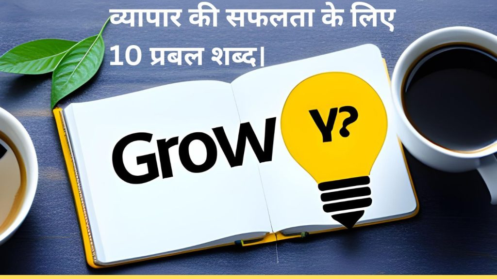

जीवंत और प्रभावशाली शब्दों का उपयोग करके अपने व्यापार को आगे बढ़ाएं
संक्षेप में
एक सफल व्यापार की ऊर्जा को बढ़ाने के लिए, हमें अपने संदेश को बेहतरीन ढंग से प्रस्तुत करने की जरूरत होती है। शब्दों की ताकत बेजोड़ होती है और यदि हम सही शब्दों का उपयोग करें, तो हम अपने व्यापार की प्रभावशीलता और विस्तार को बढ़ा सकते हैं। इस लेख में, हम 10 प्रभावशाली और शक्तिशाली शब्दों के बारे में बात करेंगे जो आपके व्यापार को सफलता की ओर ले जा सकते हैं।
संदर्भ
यदि आप अपने व्यापार को बढ़ाना चाहते हैं, तो आपको अपने संदेश को प्रभावशाली और सुरुचिपूर्ण ढंग से प्रस्तुत करने की आवश्यकता होती है। निम्नलिखित शब्दों का उपयोग करके आप अपने व्यापार में उच्चता, प्रगति, सहजता और संबंधों को बढ़ा सकते हैं।
{kind=link}

शब्द 1: प्रबलता (Prabalta) – शक्ति
प्रबलता एक महत्वपूर्ण शब्द है जो आपके व्यापार को मजबूत और सशक्त बनाने में मदद करता है। जब हम अपने व्यापार के लिए प्रबलता को अपनाते हैं, तो हम उच्चतम स्तर की संभावनाओं के साथ अपने लक्ष्यों की ओर प्रगति करते हैं।
शब्द 2: समृद्धि (Samriddhi) – समृद्धि
समृद्धि एक और महत्वपूर्ण शब्द है जो व्यापार में सफलता और वृद्धि का संकेत करता है। जब हम समृद्धि के बारे में सोचते हैं, तो हमारा ध्यान अपने व्यापार को आगे बढ़ाने के लिए नए और सर्वोत्तम मौकों की ओर केंद्रित होती हैं।
शब्द 3: उच्चता (Uchchata) – प्रशंसा
उच्चता एक ऐसा शब्द है जो अपने व्यापार को प्रशंसा और प्रतिष्ठा की ऊंचाइयों तक ले जाता है। जब हम उच्चता के साथ काम करते हैं, तो हम अपने क्षेत्र में पहचान को बढ़ाते हैं और दूसरों के आदर्श बनते हैं।
शब्द 4: आत्मविश्वास (Atmavishwas) – आत्मविश्वास
आत्मविश्वास एक महत्वपूर्ण शब्द है जो व्यापारिक सफलता के लिए आवश्यक है। जब हम आत्मविश्वास का उपयोग करते हैं, तो हम अपनी क्षमताओं में विश्वास करते हैं और संघर्षों के मध्य से निकलने की क्षमता प्राप्त करते हैं।
शब्द 5: सहजता (Sahajta) – सरलता
सहजता एक ऐसा शब्द है जो व्यापारिक संघर्षों को सरल बनाने में सहायक होता है। जब हम सहजता के साथ काम करते हैं, तो हम विपणन के कठिनाइयों को आसान बनाते हैं और अपने ग्राहकों को आकर्षित करने में सक्षम होते हैं।
शब्द 6: प्रगति (Pragati) – प्रगति
प्रगति व्यापार में एक महत्वपूर्ण पहलू है जो सफलता की ओर ले जाता है। जब हम प्रगति को महत्व देते हैं, तो हम अपने क्षेत्र में आदर्श बनते हैं, नई तकनीकों को अपनाते हैं, और सदैव उन्नति की ओर बढ़ते हैं।
नवीनता एक महत्वपूर्ण शब्द है जो Update और नए आविष्कारों की ओर इशारा करता है। जब हम नवीनता को ध्यान में रखते हैं, तो हम अपने व्यापार में नई विचारों को अपनाते हैं और अपने ग्राहकों को आकर्षित करने के लिए नए उत्पाद और सेवाओं की पेशकश करते हैं।
शब्द 8: संयम (Sanyam) – अनुशासन
संयम एक महत्वपूर्ण शब्द है जो व्यापारिक सफलता के लिए आवश्यक है। जब हम संयम का पालन करते हैं, तो हम खुद को संयमित रखते हैं, संघर्षों का सामना करते हैं, और उच्चता की ओर आगे बढ़ते हैं।
शब्द 9: ग्राहक-संबंध (Graahak-Sambandh) – ग्राहक संबंध
ग्राहक-संबंध एक महत्वपूर्ण शब्द है जो व्यापारिक सफलता के लिए आवश्यक है। जब हम ग्राहक-संबंध पर ध्यान केंद्रित करते हैं, तो हम अपने ग्राहकों के साथ अच्छी संबंध स्थापित करते हैं, उनकी जरूरतों को समझते हैं, और उन्हें संतुष्ट रखने के लिए नए और रोचक प्रस्ताव पेश करते हैं।
शब्द 10: Update (Adyatan) – अनुकूलता
Update एक महत्वपूर्ण शब्द है जो व्यापार में सफलता की ओर इशारा करता है। जब हम Update के बारे में सोचते हैं, तो हम अपने व्यापार में नवीनता को जीवंत रखने के लिए प्रयास करते हैं, नए तकनीकों का उपयोग करते हैं, और बाजार की मांगों और उपयोगकर्ता की आवश्यकताओं के साथ समायोजन करते हैं।
संपूर्णता का अनुभव करें
इन 10 प्रभावशाली शब्दों का उपयोग करके, आप अपने व्यापार को सफलता की ओर ले जा सकते हैं। यह शब्द आपको एक ताकतवर व्यापारी बनाने में मदद करेंगे, जो अपने ग्राहकों को प्रभावित करने, अपनी सेवाओं और उत्पादों को बेहतर बनाने, और अपने लक्ष्यों की प्राप्ति के लिए नई ऊंचाइयों को छू सकते हैं।
समापन
इन 10 प्रभावशाली शब्दों का उपयोग करके, आप अपने व्यापार को और अधिक मजबूत, प्रभावशाली और सफल बना सकते हैं। याद रखें, शब्दों की ताकत को समझना और उन्हें सही ढंग से प्रयोग करना अत्यंत महत्वपूर्ण है। जब आप अपने व्यापार में इन शब्दों को शामिल करते हैं, तो आप अपने लक्ष्यों की प्राप्ति के लिए एक मजबूत नींव बना सकते हैं।
अक्सर पूछे जाने वाले प्रश्न (FAQs)
1. क्या मैं इन शब्दों का उपयोग अपने व्यापार में कर सकता हूँ?
जी हां, यह शब्द आपको अपने व्यापार में उच्चता, सफलता और प्रगति के लिए उपयोगी साबित हो सकते हैं।
2. क्या ये शब्द हिंदी में ही हैं?
हाँ, ये शब्द हिंदी में हैं और इनका हिंदी में ही उपयोग करना चाहिए।
3. क्या इन शब्दों का उपयोग सभी व्यापारों के लिए समान रूप से उपयोगी है?
हाँ, ये शब्द सभी व्यापारों के लिए समान रूप से उपयोगी हैं। यह आपके व्यापार के संदेश को मजबूती और प्रभावशीलता के साथ प्रस्तुत करने में मदद करेंगे।
4. क्या मैं इन शब्दों का उपयोग अपने व्यापार के विज्ञापनों में कर सकता हूँ?
जी हां, आप इन शब्दों का उपयोग अपने व्यापार के विज्ञापनों में कर सकते हैं। यह आपके विज्ञापन को बेजोड़ बनाने और आकर्षक बनाने में मदद करेगा।
5. क्या मैं इन शब्दों का उपयोग अपने व्यापारी मीटिंग्स में कर सकता हूँ?
हाँ, यह शब्द आपको अपने व्यापारी मीटिंग्स में उपयोग करने के लिए उपयुक्त हो सकते हैं। इनका उपयोग करके आप अपनी बात को मजबूती से प्रस्तुत कर सकते हैं और विश्वास प्राप्त कर सकते हैं।
अपने व्यापार को अद्यतित करने और सफलता की ओर ले जाने के लिए, इन 10 प्रभावशाली शब्दों का उपयोग करें। ये शब्द आपको अपने व्यापार की प्रगति, समृद्धि और सफलता में मदद करेंगे।